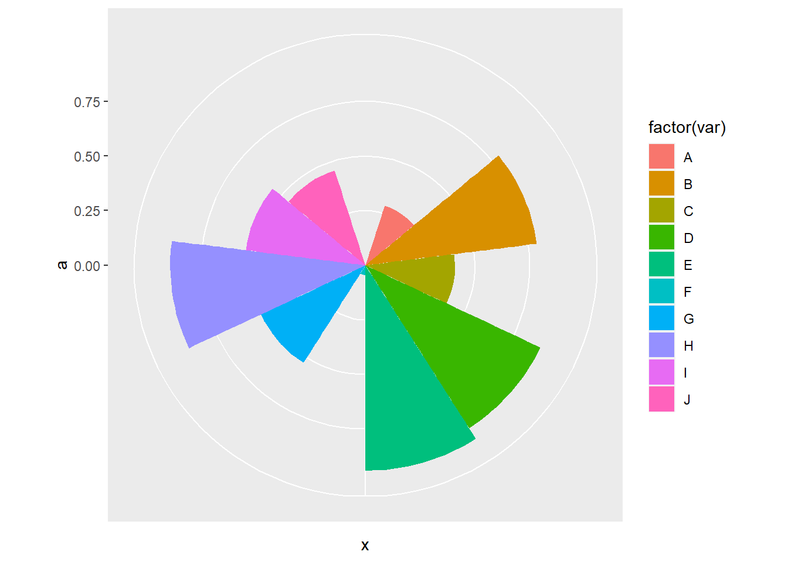
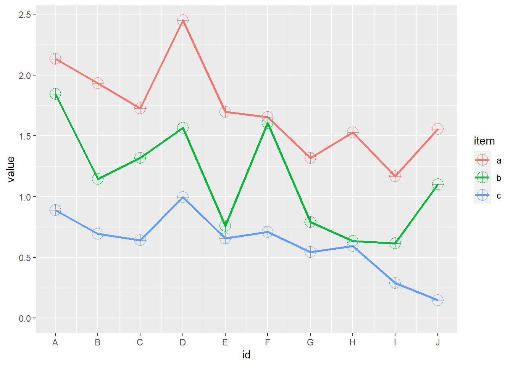

── Attaching packages ─────────────────────────────────────── tidyverse 1.3.2 ──
✔ ggplot2 3.3.6 ✔ purrr 0.3.5
✔ tibble 3.1.8 ✔ dplyr 1.0.10
✔ tidyr 1.2.1 ✔ stringr 1.4.1
✔ readr 2.1.3 ✔ forcats 0.5.2
── Conflicts ────────────────────────────────────────── tidyverse_conflicts() ──
✖ dplyr::filter() masks stats::filter()
✖ dplyr::lag() masks stats::lag()7 Example
7.1 数据准备
set.seed(123) #设定随机种子，保证做的图和这里的一样#
df <- data.frame(
var=LETTERS[1:10], #字母A-J#
id=1:10, #数字1-10#
a=runif(10), #10个随机数#
b=runif(10), #10个随机数#
c=runif(10), #10个随机数#
stringsAsFactors = F #不转换为因子#
)
df1 <- gather(df,"item",value,-1:-2)
df1$item_id<-rep(1:3,each=10);df1 var id item value item_id
1 A 1 a 0.28757752 1
2 B 2 a 0.78830514 1
3 C 3 a 0.40897692 1
4 D 4 a 0.88301740 1
5 E 5 a 0.94046728 1
6 F 6 a 0.04555650 1
7 G 7 a 0.52810549 1
8 H 8 a 0.89241904 1
9 I 9 a 0.55143501 1
10 J 10 a 0.45661474 1
11 A 1 b 0.95683335 2
12 B 2 b 0.45333416 2
13 C 3 b 0.67757064 2
14 D 4 b 0.57263340 2
15 E 5 b 0.10292468 2
16 F 6 b 0.89982497 2
17 G 7 b 0.24608773 2
18 H 8 b 0.04205953 2
19 I 9 b 0.32792072 2
20 J 10 b 0.95450365 2
21 A 1 c 0.88953932 3
22 B 2 c 0.69280341 3
23 C 3 c 0.64050681 3
24 D 4 c 0.99426978 3
25 E 5 c 0.65570580 3
26 F 6 c 0.70853047 3
27 G 7 c 0.54406602 3
28 H 8 c 0.59414202 3
29 I 9 c 0.28915974 3
30 J 10 c 0.14711365 37.2 簇状柱形图
7.3 堆积柱形图
7.4 百分比堆积柱形图
7.5 饼图 1
p+coord_polar(theta="y")p+coord_polar(theta="x")7.6 饼图 2
p+coord_polar(theta="y")p+coord_polar(theta="x")7.7 饼图 3
p+coord_polar(theta="y")p+coord_polar(theta="x")
7.8 普通折线图
ggplot(df1,aes(id,value,colour=item))+
geom_line(size=1)+
scale_x_continuous(breaks = 1:10,labels = LETTERS[1:10])7.9 堆积折线图
ggplot(df1,aes(id,value,colour=item))+
geom_line(position="stack",size=3,linetype=6)+
scale_x_continuous(breaks = 1:10,labels = LETTERS[1:10])7.10 百分比堆积折线图
ggplot(df1,aes(id,value,colour=item))+
geom_line(position="fill")+
scale_x_continuous(breaks = 1:10,labels = LETTERS[1:10])7.11 带标记的折线图
p<-ggplot(df1,aes(id,value,colour=item))
p+geom_line(linetype=3)+geom_point(shape=10,size=3)7.12 带标记的堆积折线图
ggplot(df1,aes(id,value,colour=item))+
geom_line(position="stack",size=1)+
geom_point(position="stack",size=5,shape=10)+
scale_x_continuous(breaks = 1:10,labels = LETTERS[1:10])
7.13 带标记百分比堆积折线图
ggplot(df1,aes(id,value,colour=item))+
geom_line(position="fill")+
geom_point(position="fill")+
scale_x_continuous(breaks = 1:10,labels = LETTERS[1:10])
7.14 散点图和气泡图
p<-ggplot(df1,aes(var,value,colour=item))
p+geom_point(aes(size=value*1.5))7.15 面积图
ggplot(df1,aes(id,value))+
geom_area(aes(fill=item), position="dodge", alpha=0.5)+ #position_dodge(width=0)
scale_x_continuous(breaks = 1:10,labels = LETTERS[1:10])Warning: Width not defined. Set with `position_dodge(width = ?)`7.16 堆积面积图
ggplot(df1,aes(id,value))+
geom_area(aes(fill=item), position="stack", alpha=0.5)+ #position=“stack”可省
scale_x_continuous(breaks = 1:10,labels = LETTERS[1:10])7.17 百分比堆积面积图
ggplot(df1,aes(id,value))+
geom_area(aes(fill=item),position="fill",alpha=0.5)+
scale_x_continuous(breaks = 1:10,labels = LETTERS[1:10])7.18 箱线图
ggplot(df1,aes(item,value,colour=item))+
geom_boxplot(aes(fill=item),alpha=0.2,
outlier.colour = "red",
outlier.shape = 2,
outlier.size = 5,
coef=1.5)+
geom_jitter(width = 0.1)7.19 直方图
ggplot(df1,aes(value))+
geom_histogram(bins=10,colour="white")